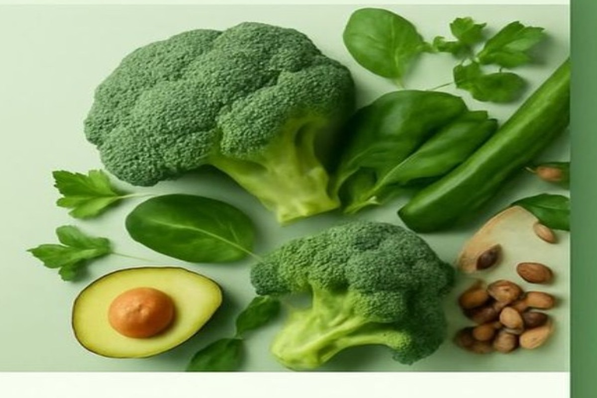

NEPAL'S LOCATION-BASED FARMER MARKETPLACENearest farm.
Nearest farm.
Freshest harvest.
Hariyo Mart matches buyers with serviceable harvests around them while every farmer runs an independent digital store.

100% Nepal grown♧ Traceable originFarm and province details
▣ Fast local deliveryLocation-aware service
✓ Secure paymentCOD and gateway ready
✦ Quality checkedGrading and packaging
LIVE LOCATION LOGIC
Buy from the closest serviceable farm.
Choose a buyer city and radius. This zero-install preview ranks the seeded marketplace by approximate farm origin; the full web and mobile apps use GPS + the marketplace API.
0matched products
Shop by category
FARM FRESHFrom our farms
From our farms
to your home.
One transparent network connecting growers, provincial collection centres, warehouses and delivery partners.
50+Partner farms
7Provinces
84Products
🧑🌾
Best-selling products
Nepal's seven provinces
FARMER SAAS
Every farmer gets their own Hariyo Store.
Farmer onboarding, location, live harvest, isolated stock, seller orders, delivery zones and payout records — inside one shared national marketplace.
FARMER TENANTMy Harvest25 kg tomato · NPR 120/kgMy Delivery Zone35 km · pickup enabledMy Orders & PayoutPrivate to this seller